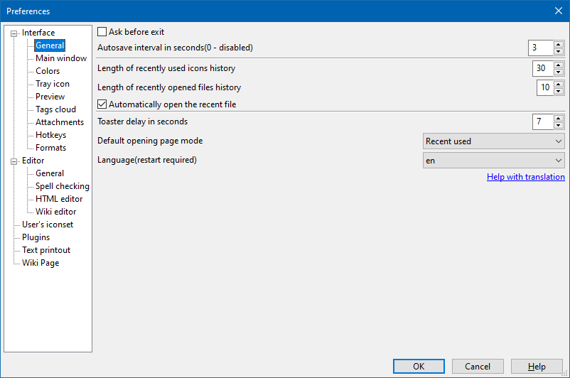

Interface - General
Interface - Main window
Interface - Colors
Interface - Tray icon
Interface - Preview
Interface - Tags cloud
Interface - Attachments
Interface - Hotkeys
Editor - General
Editor - Spell checking
Editor - HTML editor
Editor - Wiki editor
User's icon set
Plugins
Text printout
Wiki page
Settings File Location
OutWiker keeps all settings in the outwiker.ini file. Its location depends on the operating system and running mode (portable or normal).
In portable mode the outwiker.ini file located in the same directory as the executable file outwiker.exe. The same is true for plug-ins, icons and note styles. It means OutWiker can be copied and run, for example, from a memory stick. It allows to run the program securely, compare to normal mode.
If OutWiker runs in the normal mode, under Windows 7/10 the outwiker.ini file is normally placed at the user's profile directory, namely, C:\Users\USERNAME\AppData\Roaming\outwiker . Also, this directory houses special subdirectories for plug-ins, styles and icons.
The location of the settings file Under Linux depends on the value of XDG_CONFIG_HOME environment variable. If the environment variable is not set the outwiker.ini file locates in the ~/.config/outwiker directory.
All the preferences described below can be changed in the "Preferences" dialogue, which can be called via the Edit - Preferences... menu.
